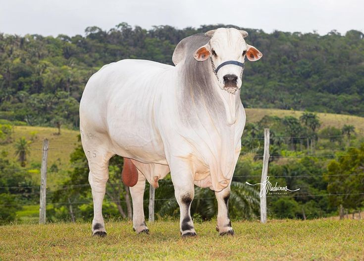

Quando o mês de maio desponta no calendário, duas presenças são esperadas ansiosamente, pela maioria dos goianienses:
o friozinho, que chega antes do inverno e junto com ele, a Exposição Agropecuária do Estado, ou simplesmente, a Pecuária.
Antes mesmo do início da festa um movimento diferente muda a cara da Capital: bois, vacas, cavalos, porcos e outros animais, muitos premiados, famosos, caríssimos e com status de estrelas, “desfilam” pela cidade até chegarem ao Parque da Nova Vila, região Norte de Goiânia; o trânsito no entorno do local é totalmente modificado para atender ao aumento da circulação de veículos na região; independente das tendências do mundo fashion, as botas, chapéus, camisas xadrezes ou listradas é que mandam na moda. É um período realmente diferenciado no cenário urbano.
A grandiosidade da Exposição Agropecuária não aconteceu do “dia para a noite”. Pelo contrário, o evento é um dos mais tradicionais e antigos realizados no estado, portanto com muita história para contar.
A primeira edição foi realizada em 1942, pela Sociedade Goiana de Pecuária, na época SGP (que depois adicionaria a Agricultura e se tornaria SGPA), como parte das comemorações da inauguração da nova capital. Evento grandioso, teve até a presença do presidente da República, Getúlio Vargas. Porém, até 1949, a exposição não passava de uma feira, realizada em espaços improvisados e instalações precárias, restrito a produtores e comerciantes de gado. Em 1950, com a inauguração do Parque de Nova Vila, passa a ser um grande evento de mostra de animais e de implementos agrícolas, além de ganhar novos contornos de uma festa popular.
Atrações da festas agropecuária: Rodeio,Prova do laço,Prova do tambor,Show artístico,etc.
Variadas inovações típicas da agricultura 4.0 têm possibilitado ótimos benefícios na produtividade, simplificando a gestão e reduzindo boa parte dos custos.
O primeiro progresso da tecnologia na agricultura foi a utilização do Sistema de Posicionamento Global (GPS), que permitiu o uso de novas máquinas guiadas por computadores e satélite na lavoura, tratores guiados por essa tecnologia ao realizar o plantio de sementes, além da administração de pesticidas mais precisa. Tudo isso possibilitou um aumento na performance, diminuindo os períodos de parada.
O emprego de softwares integrados foi outra grande novidade. A oportunidade de obter dados e visualizar vários indicadores de desempenho, por meio de um computador, ou até mesmo por um smartphone, possibilitou aos gestores um domínio total da plantação.
O último grande acontecimento tecnológico no ambiente agrícola foi a inclusão de drones nos processos práticos de trabalho. A utilização destas aeronaves não tripuladas propicia o monitoramento aéreo em tempo real da atividade de colheita, assim como o sensoriamento remoto mais transitável se comparado ao feito por satélites.
Os drones são capazes de identificar pragas na plantação e obstáculos na produção com muita velocidade, diminuindo prejuízos e ampliando a performance. Além disso, possibilitam identificar as áreas de necessidade da aplicação de insumos e pesticidas, permitindo um uso mais preciso.
Ingressos com desconto de 40% até 26/03/2024
Ingressos com desconto de 20% até 17/05/2024
Ingressos com desconto de 10% até 07/06/2024
Desenvolvido por: Luiz Henrique M. Rodrigues e Leonardo Barbosa Eleoterio
©
; ¢ € ◊ ♠ ♣ ♥ ♦ ® ¤ ↔ ↵ ← ↑ ↓ → • ‡ ¶ »